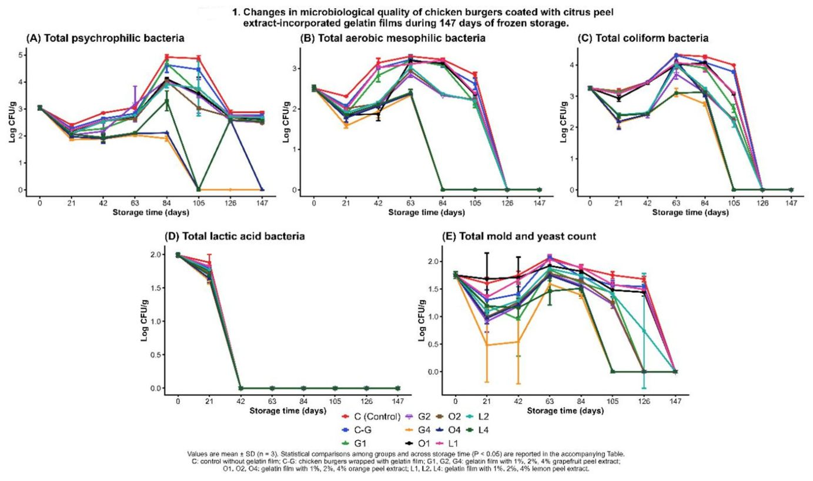

Как кожура цитрусовых помогает дольше хранить куриные бургеры


Полное описание рисунка
Рис. 1. Изменения микробиологического качества куриных котлет (бургеров), покрытых желатиновыми плёнками с добавлением экстрактов цедры цитрусовых, в течение 147 дней замороженного хранения: (A) общее количество психрофильных бактерий, (B) общее количество аэробных мезофильных бактерий, (C) общее количество бактерий группы кишечной палочки (колиформ), (D) общее количество молочнокислых бактерий и (E) общее количество плесневых и дрожжевых грибов. Значения выражены как среднее ± стандартное отклонение (n = 3). Количество микроорганизмов выражено в log КОЕ/г. Различные буквы в соответствующей таблице данных указывают на статистически значимые различия между обработками и периодами хранения (P < 0,05).
Исследователи нашли способ замедлить порчу замороженных полуфабрикатов с помощью съедобных пленок. Желатиновая оболочка, обогащенная экстрактами цитрусовых корок, эффективно подавляет окисление и рост бактерий. Наилучшие результаты показал 4% экстракт грейпфрута, сохранивший качество бургеров на протяжении 147 дней.
Главное
- 4% экстракт грейпфрута в желатиновой пленке лучше всего тормозит окисление жиров.
- Упаковка эффективно подавляет рост психрофильных и мезофильных бактерий при -18 °C.
- Цитрусовые экстракты богаты фенольными соединениями, работающими как природные консерванты.
Подробнее
Для эксперимента использовали желатиновые пленки с добавлением 1%, 2% и 4% экстрактов грейпфрута, апельсина и лимона. Экстракты получали методом ультразвуковой экстракции (40 кГц, 30 °C) из высушенных при 45 °C корок. Бургеры хранили при -18 °C, анализируя их состояние каждые несколько недель.
К 147-му дню образцы, упакованные в пленку с 4% экстрактом грейпфрута, показали минимальные значения перекисного числа (4,50 мэкв O₂/кг) и тиобарбитурового числа (0,74 мг МДА/кг), что свидетельствует о высокой антиоксидантной защите. Также зафиксировано значительное снижение общего количества аэробных мезофильных и психрофильных бактерий, плесени и дрожжей по сравнению с контрольной группой.
Ограничения
Исследование проводилось в лабораторных условиях, поэтому эффективность пленки в реальных производственных масштабах требует дополнительной проверки.
Полный перевод статьи
Резюме
В данном исследовании изучается влияние съедобных желатиновых пленок, обогащенных экстрактами кожуры цитрусовых (грейпфрута, апельсина и лимона) в концентрациях 1%, 2% и 4%, на качество и срок хранения куриных бургеров при заморозке − 18 °C в течение 147 дней. Важно отметить, что срок хранения был увеличен за счет подавления двух факторов — микробного роста и окисления — при использовании обогащенных желатиновых пленок. На 147-й день образцы с 4% экстрактом кожуры грейпфрута показали значительно более низкие значения перекисного числа (4,50 мэкв O₂/кг), тиобарбитурового числа (0,74 мг МДА/кг), общего содержания летучих основных азотистых соединений (11,20 мг N/100 г) и pH (6,77) по сравнению с контрольными образцами без упаковки (p ≤ 0,05). Кроме того, микробиологический анализ показал, что 4% экстракты кожуры цитрусовых значительно подавляли общее количество аэробных психрофильных бактерий, мезофильных бактерий, колиформных бактерий, молочнокислых бактерий, а также общее количество дрожжей и плесени по сравнению с контрольной и другими группами. Кожура грейпфрута продемонстрировала самое высокое содержание антиоксидантов и фенольных соединений, за ней следуют кожура апельсина и лимона. В целом, желатиновые пленки, обогащенные 4% экстрактами цитрусовой кожуры, показали улучшенные антиоксидантные и антибактериальные свойства, что указывает на их потенциал в качестве натуральных активных упаковочных материалов для сохранения мясных продуктов.
Важно
Желатиновые пленки с 4% экстрактом грейпфрута эффективно замедляют окисление и рост микрофлоры, продлевая срок хранения куриных бургеров до 147 дней при заморозке.
Ключевые слова: Активная упаковка · Экстракт кожуры цитрусовых · Срок хранения · Съедобная желатиновая пленка · Куриные бургеры · Антимикробные свойства · Замороженное хранение · Окисление липидов · Натуральный консервант
Куриное мясо обладает высокой пищевой ценностью, включая белки, низкое содержание жиров, свободные аминокислоты, витамины и минералы. Однако куриное мясо является скоропортящимся продуктом даже при хранении при низких температурах. Ключевыми факторами, способствующими порче, являются кислород, естественные ферменты и микробная активность. Во время холодильного хранения метаболическая активность психротрофных бактерий, таких как Pseudomonas spp., Enterobacteriaceae, Brochothrix thermosphacta и молочнокислые бактерии, часто приводит к физико-химическим изменениям. Как правило, эти процессы порчи в курином мясе вызывают изменения pH, образование слизи и деградацию структурных компонентов. Поэтому в настоящее время исследователи изучают методы природного происхождения для подавления роста микробов и окисления, включая использование биополимеров (желатин, хитозан, альгинат, крахмал, агар, каррагинан, коллаген и кератин) в качестве консервирующих агентов. Эти биополимеры преобразуются в биопластики, съедобные пленки или функциональные добавки. Съедобная пленка — это тонкий слой съедобного материала, наносимый непосредственно на поверхность пищевого продукта. Ее основная функция...
Пояснение
Биополимеры — это природные полимеры (белки или полисахариды), которые можно использовать для создания экологически чистой упаковки, способной защищать продукты от внешней среды.
Введение
Куриное мясо является одним из наиболее потребляемых видов мяса в мире и служит важным источником животного белка. Оно считается более здоровым вариантом питания благодаря своим свойствам. Основная функция пленок заключается в снижении факторов порчи, таких как микробный рост, проницаемость для кислорода и водяного пара, а также потеря летучих ароматических веществ, что позволяет продлить срок хранения пищевых продуктов. Такие пленки обычно производятся с использованием биополимеров, таких как полисахариды и белки. Следовательно, физические свойства и структурные характеристики этих биополимеров могут варьироваться в зависимости от состава и структуры матрицы. Желатин является одним из наиболее значимых и примечательных биополимеров. Это производное белка, широко используемое в пищевой промышленности благодаря своим уникальным свойствам, включая способность к гелеобразованию, поверхностную активность, контроль вязкости и отличную пленкообразующую способность.
Важно
Биополимерные пленки на основе желатина эффективно замедляют порчу продуктов, создавая барьер для микробов и кислорода, однако требуют введения добавок для защиты от окисления.
Пояснение
Биополимеры — это природные полимеры (белки, крахмалы), из которых можно создавать съедобные или биоразлагаемые упаковочные материалы.
Однако, несмотря на эти преимущества, чистый желатин и пленки на его основе ограничены в применении из-за отсутствия присущих им антиоксидантных и антимикробных свойств. Чтобы преодолеть это ограничение, недавние исследования сосредоточились на улучшении функциональных свойств биоразлагаемых пленок путем включения натуральных антиоксидантов растительного происхождения, таких как экстракты и эфирные масла. Эти растительные экстракты, богатые фенольными соединениями и полученные из различных частей растений (например, фруктов, листьев, семян и кожуры), эффективно используются в качестве активных ингредиентов при создании пленок и покрытий на основе желатина. По этой причине цитрусовые являются одними из самых популярных фруктовых культур в мире благодаря привлекательному цвету, вкусу и аромату. Мировое производство цитрусовых увеличилось более чем на 157 миллионов тонн в год. Эти фрукты относятся к семейству Rutaceae, которое включает более 1300 видов. Апельсин, лимон, мандарин, лайм и грейпфрут являются одними из наиболее часто потребляемых цитрусовых в мире.
Осторожно
Исследование сфокусировано на лабораторной модели пленок; результаты могут отличаться при масштабировании на промышленное производство.
Тем не менее, около 50–60% отходов цитрусовых становятся несъедобными после потребления или переработки, включая кожуру, семена, мякоть и остатки сегментов. Многие исследования изучали потенциальное применение кожуры цитрусовых в пищевой промышленности, поскольку они являются богатым источником ценных биоактивных компонентов, включая эфирные масла, витамины, флавоноиды, пищевые волокна, белки, пектин и различные фенольные соединения. Антиоксидантные и антимикробные свойства экстрактов кожуры цитрусовых обусловлены наличием биоактивных соединений, включая фенольные кислоты, эфирные масла и флавоноиды (например, гесперидин и нарингин), которые продемонстрировали значительный потенциал в качестве натуральных консервантов в пищевых системах. Предыдущие исследования показали, что включение биоактивных соединений из кожуры цитрусовых в матрицы биополимеров может изменить важные физические свойства, включая проницаемость для водяного пара, барьерную способность к кислороду и механическую прочность. Эти модификации могут значительно улучшить антиоксидантные и антимикробные свойства съедобных пленок, тем самым повышая качество пищевых продуктов и продлевая срок их хранения. Кроме того, экстракты кожуры цитрусовых богаты фенольными соединениями, флавоноидами и другими фитохимическими веществами, которые продемонстрировали значительный потенциал в качестве натуральных консервантов в пищевых системах.
Однако, несмотря на эти многообещающие результаты, имеется ограниченная информация о сравнительной эффективности экстрактов кожуры грейпфрута, апельсина и лимона, включенных в съедобные пленки на основе желатина для сохранения куриных бургеров во время длительного замороженного хранения. Насколько нам известно, лишь немногие исследования систематически сравнивали консервирующую способность этих экстрактов при различных уровнях включения в идентичных условиях состава и хранения, одновременно оценивая их влияние на физико-химические характеристики, окислительную стабильность и микробиологическое качество. Поэтому целью настоящего исследования была оценка влияния съедобных желатиновых пленок, обогащенных 1%, 2% и 4% экстрактов кожуры грейпфрута, апельсина и лимона, на качество и срок хранения куриных бургеров в течение 147 дней замороженного хранения при температуре − 18 °C. В отличие от предыдущих исследований, в которых в основном изучались отдельные экстракты или пленки по отдельности, данное исследование представляет систематическую сравнительную оценку экстрактов кожуры грейпфрута, апельсина и лимона, включенных в желатиновые пленки при идентичных условиях состава и хранения. Полученные данные способствуют развитию устойчивых систем активной упаковки, демонстрируя потенциал побочных продуктов переработки цитрусовых в качестве натуральных консервантов для мясных продуктов, одновременно поддерживая переработку сельскохозяйственных отходов.
Результаты
Физико-химические свойства желатиновых пленок
Экстракты цитрусовой кожуры оказали существенное влияние на механические качества желатиновых пленок, повысив их гибкость и практическую ценность. Двумя важными факторами, определяющими свежесть куриного мяса, являются значения pH и общего летучего основного азота (TVB-N), причем рост этих показателей указывает на порчу продукта. Изначально pH всех образцов составлял 6,10. За 147 дней хранения во всех группах было отмечено незначительное повышение pH (Таблица 1). Куриные бургеры, обработанные желатиновыми пленками с более высокой концентрацией (4%) экстрактов цитрусовой кожуры, показали меньший рост pH, что свидетельствует о более плавном протекании биохимических реакций. К концу срока хранения значения pH в группах G-G4, G-O4 и G-L4 составили 6,77, 6,88 и 6,80 соответственно. Напротив, в группах C и G-C наблюдались значительно более высокие значения pH — 7,13.
Важно
Использование 4% экстрактов цитрусовых в составе пленок замедляет рост pH и TVB-N, что позволяет дольше сохранять свежесть мясных полуфабрикатов при заморозке.
Постепенное повышение pH, наблюдаемое при замороженном хранении, правильнее связывать с накоплением щелочных метаболитов, таких как аммиак и биогенные амины, образующихся в процессе микробного метаболизма и распада белков, а не только с деградацией самих белков. Эта интерпретация подтверждается одновременным ростом значений TVB-N в течение всего периода хранения, что указывает на постепенное образование летучих азотистых соединений, связанных с ухудшением качества. Аналогичные наблюдения были представлены в работе Farokhzad et al. (2023), авторы которой связали более высокие значения pH в необработанных контрольных образцах с более интенсивными биохимическими изменениями, вызванными порчей в процессе хранения.
Пояснение
TVB-N (общий летучий основной азот) — это показатель, который растет по мере того, как в мясе размножаются бактерии и разрушаются белки; чем ниже этот показатель, тем свежее продукт.
Более того, увеличение концентрации экстрактов кожуры грейпфрута, апельсина и лимона, включенных в состав съедобных желатиновых пленок, эффективно замедляло рост pH во время замороженного хранения. Этот защитный эффект можно объяснить антиоксидантными свойствами и природной антимикробной активностью фитохимических веществ цитрусовой кожуры, включая фенольные соединения и флавоноиды, которые помогают снизить биохимические реакции, связанные с порчей, и поддерживать физико-химическую стабильность куриных бургеров при хранении (Ebrahimian et al., 2023). Аналогичным образом, как показано в Таблице 1, контрольный образец продемонстрировал более высокие значения TVB-N по сравнению с опытными образцами, что указывает на более высокую активность процессов порчи и распада белков в мясе (Manthey et al., 1988). Тем не менее, пленки с экстрактами (G-G4, G-O4, G-L4), (G-G2, G-O2, G-L2) и (G-G1, G-O1, G-L1) оказали значительное влияние на значение TVB-N бургеров во время замороженного хранения (P < 0,05). К концу хранения наименьшее значение TVB-N было зафиксировано...
Экстракты кожуры грейпфрута
Кожура цитрусовых богата фенольными соединениями, лимоноидами и флавоноидами. Как показано в Таблице 2, наблюдалась значительная разница в содержании общих антиоксидантов и фенольных соединений в экстрактах кожуры грейпфрута, апельсина и лимона (P<0,05). Кожура грейпфрута обладает наибольшим количеством фенольных соединений и антиоксидантной активностью, за ней следуют кожура апельсина и лимона. Это различие можно объяснить неодинаковым составом и концентрацией фенольных веществ в каждом виде цитрусовой кожуры. Антиоксидантная ценность экстракта кожуры грейпфрута составила 687,48 мкмоль trolox/г в 70% этанольном экстракте; аналогично, экстракт кожуры лимона показал наименьшее значение (227,40 мкмоль trolox/г). Согласно результатам, содержание фенольных соединений составило: в грейпфруте 598,45 мг GAE/г, в кожуре апельсина 428,62 мг GAE/г и в кожуре лимона 364,8 мг GAE/г соответственно.
Важно
Экстракт кожуры грейпфрута показал максимальную антиоксидантную активность (687,48 мкмоль trolox/г) и содержание фенолов (598,45 мг GAE/г), что делает его наиболее эффективным природным консервантом среди изученных образцов.
Полученные результаты согласуются с исследованием, в котором сообщалось, что содержание общих фенолов в цитрусовой кожуре варьировалось от 188,2 до 766,7 мг GAE/100 г. Аналогично было отмечено, что 70% этанольный экстракт апельсиновой кожуры обладает сильной антиоксидантной активностью с максимальным значением 607,67 мкмоль trolox/г, а экстракт лимонной кожуры — 203,22 мкмоль trolox/г. В другом исследовании в 50% этанольном экстракте апельсиновой кожуры (OPE) было зафиксировано 189,7 мг GAE/100 г общих фенолов. Наши данные подтверждают, что общая антиоксидантная активность и содержание фенолов в кожуре грейпфрута выше, чем в кожуре мандарина.
Пероксиды являются первичными продуктами окисления липидов и отвечают за начальную стадию окисления. В начале хранения значение перекисного числа (PV) составляло 1,00 мэкв O₂/кг, и это значение увеличивалось во всех образцах в процессе хранения (Таблица 3). Образцы, упакованные в желатиновые пленки с экстрактом цитрусовой кожуры (группы G-G, G-O и G-L), поддерживали значительно более низкие значения PV на протяжении всего периода хранения (P < 0,05). К концу хранения значение PV в контрольной группе составило 7,00 мэкв O₂/кг, а в группе G-G4 — 4,50 мэкв O₂/кг. Эти результаты согласуются с предыдущими отчетами: рост PV со временем объясняется усилением окислительных процессов. Аналогичная тенденция наблюдалась для значений TBARS — вторичного индикатора окисления липидов, указывающего на изменение запаха, цвета и появление посторонних привкусов.
Пояснение
Перекисное число (PV) и TBARS — это лабораторные показатели «свежести» жиров. Чем они ниже, тем медленнее продукт прогоркает и портится.
Начальный уровень TBARS составлял 0,15 мг MDA/кг в обработанных и необработанных куриных бургерах (Таблица 3). По мере увеличения времени хранения значения TBARS во всех протестированных бургерах росли (p < 0,05). На 147-й день хранения значения TBARS составили: в группах C и G-C — 1,01 и 0,92 мг MDA/кг, а в группах с пленками из экстракта цитрусовой кожуры: G-G4 (0,74 мг MDA/кг), G-O4 (0,75 мг MDA/кг) и G-L4 (0,80 мг MDA/кг). Эти результаты согласуются с данными о том, что образцы, обработанные желатином с экстрактом апельсиновой кожуры, демонстрируют наивысшую антиоксидантную активность при хранении. Как показано в Таблице 3, значения PV и TBARS во всех образцах постепенно увеличивались во время хранения.
Таблица 2. Общие фенольные соединения и антиоксидантная способность экстрактов кожуры грейпфрута, апельсина и лимона Образцы / Общие фенольные соединения (мг GAE/г) / Общая антиоксидантная способность (мкмоль trolox/г) Кожура грейпфрута / 598,45 ± 112,16a / 687,48 ± 94,60a Кожура апельсина / 428,62 ± 105,82a / 533,91 ± 102,80ab Кожура лимона / 364,8 ± 64,61ab / 227,40 ± 170,36b Примечание: Разные строчные буквы указывают на значительную разницу между образцами (P < 0,05). Значения выражены как среднее ± стандартное отклонение (n = 3).
Экстракты кожуры грейпфрута
Кожура цитрусовых богата фенольными соединениями, лимоноидами и флавоноидами. Как показано в Таблице 2, наблюдались значительные различия в общем содержании антиоксидантов и фенольных соединений в экстрактах кожуры грейпфрута, апельсина и лимона (P<0,05). Кожура грейпфрута обладает наибольшим содержанием фенольных соединений и антиоксидантной активностью, за ней следуют кожура апельсина и лимона. Это различие может быть связано с неодинаковым составом и концентрацией фенольных веществ в кожуре каждого вида цитрусовых. Антиоксидантная ценность экстракта кожуры грейпфрута в 70% этаноловом растворе составила 687,48 мкмоль тролокса/г, в то время как экстракт кожуры лимона показал наименьшее значение — 227,40 мкмоль тролокса/г. Согласно результатам, содержание фенольных соединений составило: в кожуре грейпфрута — 598,45 мг GAE/г, апельсина — 428,62 мг GAE/г и лимона — 364,8 мг GAE/г. Полученные результаты согласуются с данными исследований, где сообщалось, что общее содержание фенолов в кожуре цитрусовых варьировалось от 188,2 до 766,7 мг GAE/100 г. Аналогичным образом, в других работах отмечалось, что 70% этаноловый экстракт кожуры апельсина обладает сильной антиоксидантной активностью с максимальным значением 607,67 мкмоль тролокса/г, а экстракт кожуры лимона — 203,22 мкмоль тролокса/г. Также наблюдалось, что общее содержание фенолов (189,7 мг GAE/100 г) было зафиксировано в 50% этаноловом экстракте кожуры апельсина. Эти данные подтверждают, что общая антиоксидантная активность и содержание фенолов в кожуре грейпфрута выше, чем в кожуре мандарина.
Важно
Экстракт кожуры грейпфрута показал наивысшую антиоксидантную активность (687,48 мкмоль тролокса/г) и содержание фенолов (598,45 мг GAE/г), превосходя экстракты апельсина и лимона.
Пояснение
GAE (Gallic Acid Equivalent) — единица измерения, показывающая, сколько фенольных соединений содержится в образце, в пересчете на галловую кислоту.
Более высокая консервирующая способность экстракта кожуры грейпфрута, наблюдаемая в данном исследовании, вероятно, объясняется различиями в его фитохимическом составе, а не только общим содержанием фенолов. Кожура грейпфрута особенно богата флаваноном нарингином, а также фуранокумаринами, лимоноидами, фенольными кислотами и компонентами эфирных масел, тогда как кожура апельсина содержит более высокие концентрации гесперидина, а кожура лимона характеризуется обилием эриоцитрина и других флаваноновых гликозидов. Эти фитохимические вещества обладают взаимодополняющими антиоксидантными и антимикробными свойствами, реализуемыми через различные механизмы: нейтрализацию свободных радикалов, хелатирование ионов металлов, ингибирование перекисного окисления липидов, разрушение микробных клеточных мембран и вмешательство в метаболические процессы микроорганизмов. Следовательно, комбинированное действие и относительное содержание этих биологически активных компонентов могут объяснить превосходную антиоксидантную и антимикробную эффективность экстракта кожуры грейпфрута. Тем не менее, комплексная фитохимическая характеристика экстрактов кожуры цитрусовых с использованием аналитических методов, таких как ВЭЖХ или ГХ-МС, позволила бы получить более детальное представление о соединениях, ответственных за эти эффекты, и должна быть рассмотрена в будущих исследованиях.
Осторожно
Исследование проводилось на желатиновых пленках с добавлением экстрактов; антиоксидантные свойства самих пленок напрямую не измерялись, что ограничивает выводы о конечном продукте.
Хотя в настоящем исследовании была продемонстрирована способность желатиновых съедобных пленок с добавлением экстракта кожуры цитрусовых улучшать физико-химическую стабильность и микробиологическое качество куриных бургеров при заморозке, следует признать ряд ограничений. Во-первых, антиоксидантные свойства композитных желатиновых пленок после введения экстрактов не оценивались напрямую, хотя антиоксидантная активность самих экстрактов была определена. Поскольку включение в желатиновую матрицу может влиять на функциональные свойства биологически активных соединений, будущие исследования должны изучить антиоксидантные характеристики разработанных съедобных пленок. Во-вторых, не измерялся pH экстрактов и приготовленных желатиновых пленок, что могло бы дать дополнительное представление об их физико-химическом поведении и механизмах консервации. Кроме того, хотя данное исследование показало эффективность экстрактов при заморозке, дополнительные исследования при хранении в охлажденном виде и более детальная характеристика механизмов действия позволили бы лучше понять их функциональность. Наконец, комплексная характеристика биологически активных соединений, высвобождаемых из съедобных пленок во время хранения, предоставила бы ценную информацию об их вкладе в сохранность мясных продуктов. Будущие исследования должны также оценить масштабируемость, механические свойства, потребительскую оценку и коммерческую применимость таких пленок для их внедрения в качестве экологически безопасных упаковочных материалов в пищевой промышленности.
Заключение
Настоящее исследование показало, что съедобные пленки на основе желатина, обогащенные экстрактами кожуры грейпфрута, апельсина и лимона, обладают значительным потенциалом в качестве экологически безопасных активных упаковочных материалов для хранения замороженных куриных бургеров. Введение экстрактов цитрусовой кожуры улучшило антиоксидантные и антимикробные свойства желатиновых пленок, при этом экстракт кожуры грейпфрута продемонстрировал наибольшую консервирующую эффективность среди протестированных вариантов. Куриные бургеры, покрытые желатиновыми пленками с добавлением экстрактов цитрусовых, на протяжении всего периода замороженного хранения стабильно показывали более низкие значения pH, общего содержания летучего азота оснований (TVB-N), перекисного числа (PV), содержания веществ, реагирующих с тиобарбитуровой кислотой (TBARS), и микробной обсемененности по сравнению с контрольными образцами без покрытия, что указывает на улучшенную физико-химическую стабильность и увеличенный срок хранения. Консервирующий эффект возрастал с увеличением концентрации экстракта, причем составы с 4% содержанием обеспечивали наилучшую защиту.
Важно
Использование 4% экстракта кожуры грейпфрута в желатиновой пленке максимально замедляет порчу замороженных мясных полуфабрикатов, снижая показатели окисления и рост микрофлоры.
В целом, полученные результаты доказывают, что побочные продукты переработки цитрусовых могут быть успешно использованы в качестве натуральных консервантов в биоразлагаемых съедобных пленках на основе желатина. Это обеспечивает экологически устойчивый подход к улучшению сохранности мясных продуктов и поддерживает развитие систем активной упаковки пищевых продуктов. Будущие исследования должны быть направлены на дальнейшее изучение физико-химических характеристик разработанных пленок, выяснение механизмов их антиоксидантной и антимикробной активности, оценку эффективности в различных условиях хранения и определение коммерческой применимости в упаковочной индустрии.
Пояснение
TVB-N и TBARS — это лабораторные показатели, которые позволяют объективно измерить степень свежести мяса: первый отражает распад белков, второй — окисление жиров.
Методы
Подготовка экстрактов цитрусовой кожуры
В данном исследовании грейпфруты, апельсины и лимоны были приобретены на местном рынке в Нигде. Фрукты доставили в лабораторию, где их промыли водопроводной водой, после чего очистили от кожуры. Кожуру грейпфрута, апельсина и лимона сушили отдельно в лабораторном конвекционном сушильном шкафу при температуре 45 °C в течение 48 ч. Затем измельченный порошок кожуры использовали для экстракции. Для этого 10 г порошка добавляли к 100 мл 70% этанола, полученную смесь подвергали ультразвуковой обработке (CUB-5, Citizen, 40 кГц, 220–240 В) при 30 °C в течение 45 мин. Затем смеси фильтровали через фильтровальную бумагу для отделения этанола, который выпаривали на роторном вакуумном испарителе при 45 °C; через 45 мин был получен экстракт.
Пояснение
Ультразвуковая экстракция — это метод извлечения полезных веществ из сырья с помощью звуковых волн высокой частоты, которые разрушают клеточные стенки, ускоряя процесс без перегрева продукта.
Приготовление куриных бургеров
Около 22 кг свежего куриного мяса (грудка и голень) было приобретено на рынке Bayaz, доставлено в охлажденном виде, очищено, промыто и отделено от костей. Куриные бургеры готовили из фарша куриной грудки (69,5%), пшеничной муки (10,0%), кукурузного крахмала (10,0%), соевого масла (5,0%), рисовой муки (2,0%), соли (1,0%), лукового порошка (2,0%), чесночного порошка (0,20%), черного перца (0,10%), тимьяна (0,10%) и кумина (0,10%). Затем формировали котлеты массой 100 г (1 × 8 см) и индивидуально упаковывали между двумя пленками. Для сравнения образцы разделили на 11 групп: контроль (без обработки); группа с желатиновой пленкой без экстракта (C-G); три группы с желатиновыми пленками, обогащенными экстрактом грейпфрута в концентрации 1%, 2% и 4% (G-G1, G-G2, G-G4); три группы с экстрактом апельсина (G-O1, G-O2, G-O4) и три с экстрактом лимона (G-L1, G-L2, G-L4). Образцы куриных бургеров хранили при −18 °C в течение 147 дней, что имитирует длительный срок хранения замороженных коммерческих продуктов. Физико-химические и микробиологические анализы проводили на 0, 21, 42, 63, 84, 105 и 147-й дни.
Приготовление желатиновых пленкообразующих растворов
Желатиновые пленки готовили в 3 этапа методом полива (casting technique). Желатин использовали как пленкообразователь, глицерин — для гибкости, а d-сорбитол — как пластификатор. Цитрусовые экстракты добавляли в желатиновый раствор в качестве натуральных функциональных добавок. Концентрации 1%, 2% и 4% были выбраны на основе опубликованных данных об эффективных уровнях включения в съедобные пленки при сохранении их свойств. Эти концентрации считались репрезентативными для оценки консервирующего потенциала. Концентрация 3% не была включена, так как не входила в исходный план эксперимента.
Физико-химический анализ: Определение pH образца
pH определяли согласно методу Manthey et al. (1988). Использовали цифровой pH-метр (Hanna HI2211, Hanna Instruments, Румыния). Образец массой около 10 г смешивали с 90 мл дистиллированной воды в лабораторном гомогенизаторе в течение 1–2 мин. Перед измерением pH-метр калибровали по стандартным буферным растворам с pH 4,0 и 7,0. После гомогенизации электрод погружали в смесь и фиксировали значение pH после стабилизации показаний. Измерения проводили трижды, для результатов использовали средние значения.
Общий летучий основной азот (TVB-N)
Содержание TVB-N измеряли по методу Schormüller (1968). К 20 г гомогенизированного куриного бургера добавляли 50 мл дистиллированной воды и около 1 шпателя оксида магния (MgO) в качестве пеногасителя. Дистиллят собирали в приемную колбу с 0,1 N соляной кислотой (HCl), где поглощались летучие основания. Избыток кислоты титровали раствором основания той же нормальности (0,1 N NaOH). Объем титранта фиксировали, а количество TVB-N рассчитывали в миллиграммах азота на 100 г образца (мг/100 г).
Перекисное число (PV)
Перекисное число (POV) определяли согласно методам AOAC (1990) и AOAC (1998). Использовали: 1 г образца, 30 мл смеси хлороформ–уксусная кислота (2:3, v/v), 1 мл насыщенного йодида калия (KI), 75 мл дистиллированной воды, 0,5 мл крахмала и 0,1 M тиосульфата натрия (Na₂S₂O₃). Перекисные числа образцов рассчитывали в мэкв/кг.
Вещества, реагирующие с тиобарбитуровой кислотой (TBARS)
Содержание TBARS определяли по методу AOAC (1998). Для 0,100 г образца использовали: 5 мл n-бутанола и 5 мл реагента тиобарбитуровой кислоты (TBA). Абсорбцию полученного супернатанта измеряли при 530 нм на спектрофотометре. Результаты рассчитывали по формуле и выражали в мг малонового диальдегида / кг образца.
Микробиологический анализ
Микробиологический посев проводили путем гомогенизации 10 г образца в 90 мл раствора Рингера с использованием стомахера. Психрофильные бактерии подсчитывали на среде Tryptone Glucose Yeast (TGYE Agar) после инкубации при температуре 7–10 °C в течение одной недели. Количество мезофильных бактерий определяли методом посева в чашки Петри с использованием среды Tryptone Glucose Yeast (TGYE Agar) при инкубации при 30 °C в течение 2 дней. Колиформные бактерии подсчитывали на среде Violet Red Bile Agar (VRBA) при инкубации при 37 °C в течение 24–48 ч. Молочнокислые бактерии подсчитывали на агаре Man Rogosa and Sharpe (MRS), который поддерживает их рост, при инкубации при 30 °C в течение 48 ч. Плесневые грибы и дрожжи подсчитывали на среде BAM Media M127 после инкубации при 25 °C в течение 5 дней. Все результаты микробиологического анализа выражали в log КОЕ/г.
Пояснение
Метод стомахера — это измельчение образца в стерильном пакете с помощью механических лопаток, что позволяет извлечь микроорганизмы из глубины продукта без повреждения клеток.
Анализ биологически активных компонентов
Антиоксидантная активность. Антиоксидантную активность экстрактов кожуры грейпфрута, апельсина и лимона определяли согласно методу, описанному Re et al. (1999). Антиоксидантную активность образцов рассчитывали с использованием сильной линейной корреляции (r = 0,971) в тесте ABTS и выражали в мкмоль ТЭ/г (µmol TE/g).
Общее содержание фенольных соединений. Колориметрический метод Фолина-Чокальтеу использовали для определения общего содержания фенольных соединений (TPC). Общее содержание фенольных соединений в образцах рассчитывали с использованием калибровочной кривой с высокой достоверностью (r = 0,995), а результат выражали в мг эквивалентов галловой кислоты на грамм (мг ГЭК/г).
Статистический анализ
Каждый экстракт цитрусовой кожуры готовили в трех независимых партиях, а каждая рецептура желатиновой пленки изготавливалась в трех независимых повторностях. Все физико-химические и микробиологические анализы выполнялись в трех повторностях (n = 3) для каждого вида обработки на каждом интервале отбора проб. Результаты представлены как среднее значение ± стандартное отклонение (SD). Статистический анализ проводили с использованием IBM SPSS Statistics (IBM Corp., Армонк, штат Нью-Йорк, США). Различия между средними значениями оценивали с помощью однофакторного дисперсионного анализа (ANOVA) с последующим тестом множественных сравнений Тьюки. Статистически значимыми считались различия при p < 0,05.
Полное описание рисунка
Рис. 1. Изменения микробиологического качества куриных котлет (бургеров), покрытых желатиновыми плёнками с добавлением экстрактов цедры цитрусовых, в течение 147 дней замороженного хранения: (A) общее количество психрофильных бактерий, (B) общее количество аэробных мезофильных бактерий, (C) общее количество бактерий группы кишечной палочки (колиформ), (D) общее количество молочнокислых бактерий и (E) общее количество плесневых и дрожжевых грибов. Значения выражены как среднее ± стандартное отклонение (n = 3). Количество микроорганизмов выражено в log КОЕ/г. Различные буквы в соответствующей таблице данных указывают на статистически значимые различия между обработками и периодами хранения (P < 0,05).
Схема исследования
Статья опубликована в рецензируемом журнале Food science of animal resources. Но и опубликованный результат — одно исследование, а не окончательный вывод.
Источник
| Источник | Категория | Лицензия |
|---|---|---|
| Food science of animal resources (Europe PMC) | preservatives | CC BY 4.0 |
Источники
| Источник | Ссылка |
|---|---|
| Страница статьи | europepmc.org |
| Полный текст (PDF) | link.springer.com |
| Копия PDF | github.com |
| DOI | doi.org |
| Метаданные Crossref | api.crossref.org |
| Europe PMC | europepmc.org |